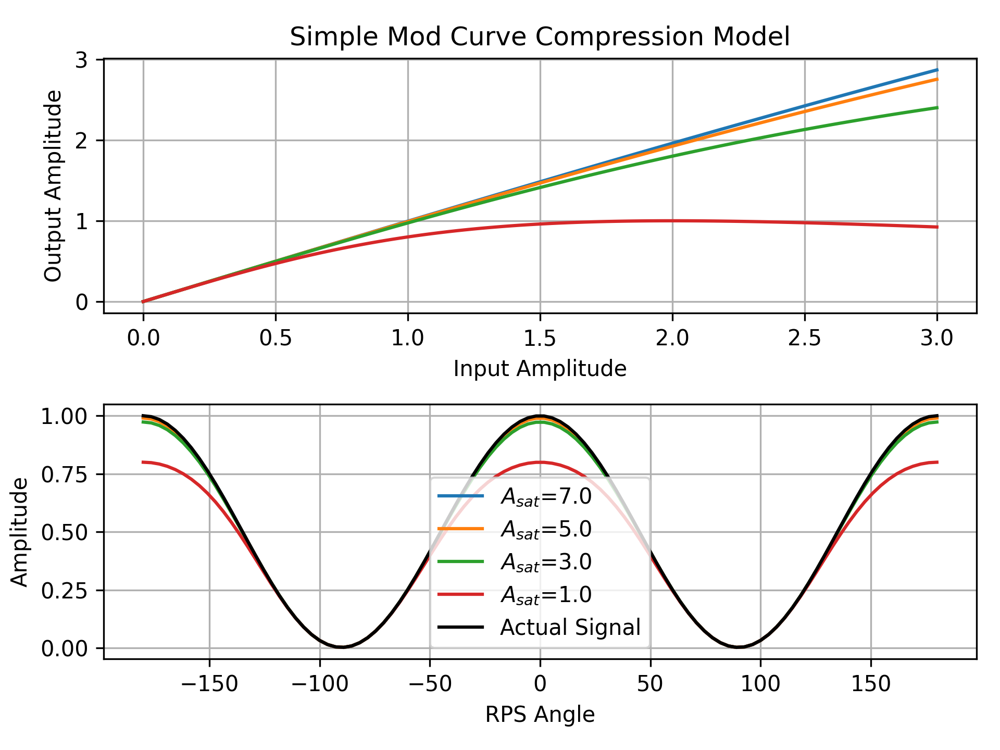
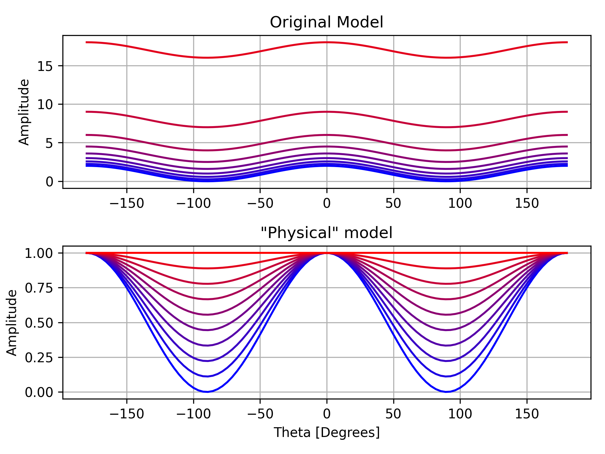
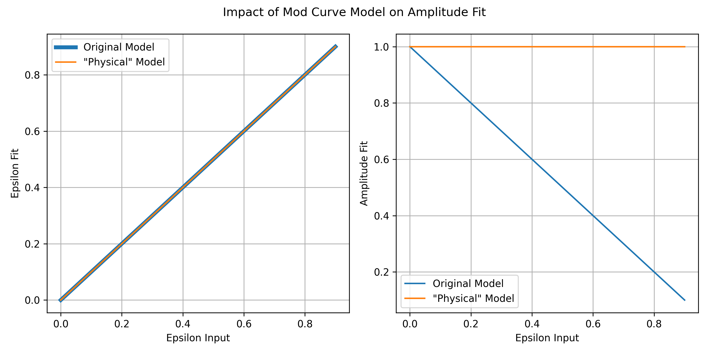
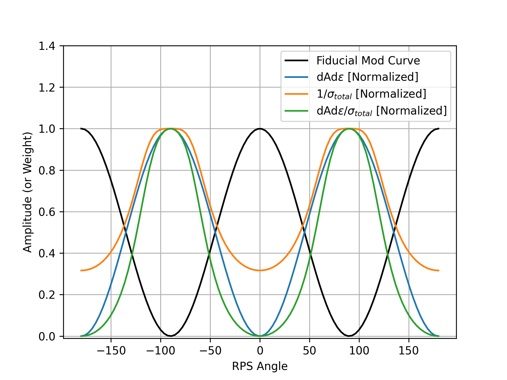

In , we published the polarization angles derived from the RPS data collected during the 2021/2022 Austral Summer.
This posting extends our earlier RPS angle analysis to polarization efficiency.
The 2022 data show some non-physical tile features, likely linked to detector non-linearity.
By reweighting the modulation curves with noise- and derivative-based schemes, we largely remove these artifacts and cut the uncertainty on polarization efficiency by about a factor of two.
The results suggest a small downward shift in $\epsilon$ (from 0.005 to ~0.003), consistent with expectations and with (probably) little impact on $r$-systematics, but opening the door to possible EE-based calibration.
Intro
For our pair-sum and pair-diff timestream signals, $z_s$ and $z_d$ respectively, we define their contributions from T, Q, and U as
\begin{equation}\label{eq:paircombinemod}
\begin{split}
&z_s = T + \rho_+\left(Q\cos2\psi_++U\sin2\psi_+\right)\\
&z_d = \rho_-\left(Q\cos2\psi_-+U\sin2\psi_-\right)\\
\end{split}
\end{equation}
where $\psi_\pm$ is the pair-averaged polarization response angle,
\begin{equation}\label{eq:paircombineangle}
\begin{split}
&\psi_\pm = \frac{\psi_A+\psi_B-\pi/2}{2}+\frac{1}{2}\tan^{-1}\left[\frac{\gamma_A\pm\gamma_B}{\gamma_A\mp\gamma_B}\frac{\sin(\psi_A-\psi_B+\pi/2)}{\cos(\psi_A-\psi_B+\pi/2)}\right]\\
\end{split}
\end{equation}
where $\gamma=\frac{1-\epsilon}{1+\epsilon}$ and $\epsilon$ is the cross-polarization leakage.
[See , § 4.1 for the complete formalism].
Note: for the rest of this posting, we'll be focusing entirely on the pair-difference polarization efficiency.
Below are the results for polarization efficiency using the current RPS analysis pipeline.
Note that features pop up for certain tiles where the polarization efficiency is non-physical.
One possible hypothesis for this is that the power from the RPS is driving some tiles to non-linearity.
To check this, I added the PSats from B3's 2019/2020 OE measurements to the pager, since I thought the lowest relative PSats should indicate which detectors would saturate first.
While that's not necessarily true, the overall morphology within a tile does appear to correlate with the most severe tiles, 1,3,4, and 8, if you squint.
Effect of detector saturation on mod curves
If the RPS is indeed too bright, then the detectors would be driven non-linear at the height of the modulation curves.
The model I use here is some generic gain compression model for demonstrative purposes.
But effectively, what we want to do is come up with some weighting scheme that downweights the larger amplitudes in the modulation curve.

Weight Optimization
Naive 1/Amp
As it happens, we know our modulation curves contain some amplitude scaling noise, so a good starting point was to just weight using
inversely with the amplitude.
In addition to accounting for non-linearities, this should also be the statistically optimum weighting.
For now, I'm assuming $\sigma_{white}=0.5\%$ and $\sigma_{amp}=3\%$ based on previous rough estimations.
We can get an idea of where most of the constraining power comes from in the data by taking the derivative of our model with respect to our parameter of interest.
So if $N_1$ and $N_2$ are small or zero (which they usually are), $\epsilon$ doesn't depend on the RPS angle in this model and thus implies a uniform weighting is best.
Intuitively, we know this isn't true, but this is really due to the way we've parameterized our model.
Looking through the literature, it appears that Abby was the first to define our modulation curve this way .
Effectively, the absolute height between the peak and trough of the mod curve remain the same, but the overall amplitude changes to make the relative height change.
See Fig. 1.1 for a plot of sweeping through epsilon of 0 to 1.

Plot of modulation curves, sweeping through $\epsilon=0$ (blue) to $\epsilon=1$ (red) with all parameters fixed. "Original Model" is given by Eq. 1 and "Physical Model" is given by Eq. 3.
Where the "physical" model is a representation of what is actually happening if we have non-zero cross-polar response.
I.e., even when perfectly orthogonal to the source, we still see the some power from the RPS, scaled by $\epsilon$:
With our current model, we still get accurate $\epsilon$'s, but the amplitude of the mod curve will change in order to compensate (see Fig. 1.2).
For small $\epsilon$, as have been the cases we've always dealt with, it's hardly noticeable.
That said, we may want to change this in the future since this means that the mod curve amplitude is tied to the uncertainty in $\epsilon$, albeit rather slightly.

Fit values of $\epsilon$ and amplitude $G$, for input values of $\epsilon$.
Input Amplitude is fixed at 1, and $\psi$, $N_1$, $N_2$ are fixed at zero.
The figure below shows ${\partial A}/{\partial \epsilon}$ and $1/\sigma^2$ compared to our modulation curve, as well as the case where we combine them.

Weights (in color) compared to a fiducial modulation curve (black).
Below is 10000 sims that includes the noise model as well as a case which includes non-linearity from detector staturation.
Not surprisingly, the $1/\sigma$ selection reduces the scatter since we're optimally weighting.
A notable feature is that when compression is on, $\epsilon$ is biased positive.
Reweighting RPS2022 data
The pager below shows the polarization parameters from the real data re-weighted.
We find that the $(\partial A/\partial \epsilon)/\sigma^2$ option nearly completely removes the features across the tiles.
Interestingly, most detectors that are 'fixed' in the real data are biased negative, the opposite of what we see in the sims.
It's not clear to me what that would mean physically.
Histogram of values from above.
While the median remains unchanged, the precision on pol.eff. gets tighter by a factor of 2 when we switch to the new weighting.
In our CMB analysis, we lock in $\epsilon=0.005$, giving us a polarization efficiency of 0.990.
These results show that our sims are in fairly good agreement, but we could change $\epsilon$ to 0.003 to reflect these measurements.
While we don't think this change would have a major impact on $r$-systematics (see a posting from Clara shortly),
this does open the possibility of performing our own EE abscal.
My plan is to start looking into that.
Impact from Non-Orthogonality
This is mostly here because I don't think I've put this in a posting before.
As we can see from Eq. 3, non-orthogonality between detectors also has an impact on polarization efficiency.
I measure a non-orthgonality between intra-pair detectors of $0.5^\circ\pm0.02^\circ$.
Futher, we can see that this feature is tied to the individual tiles.
When, we choose the subtraction based on tile orientation (H minus V), the sign of the angle flips in MCE0,
which has all of its tiles clocked 90° to the rest of the focal plane.
This effect is subdominant to the contributions from $\epsilon$.
Forcing the detector non-orthogonality to zero changes the polarization efficiency by $O(10^{-5})$.
Appendix
Code
-->
The code to create the plots in this posting can be found within the scripts/ directory.
Data
The epsilon values from this analysis can be found in BICEP3's Aux Data directory: aux_data/epsilons/epsilon_rps_bicep3_20170101.csv